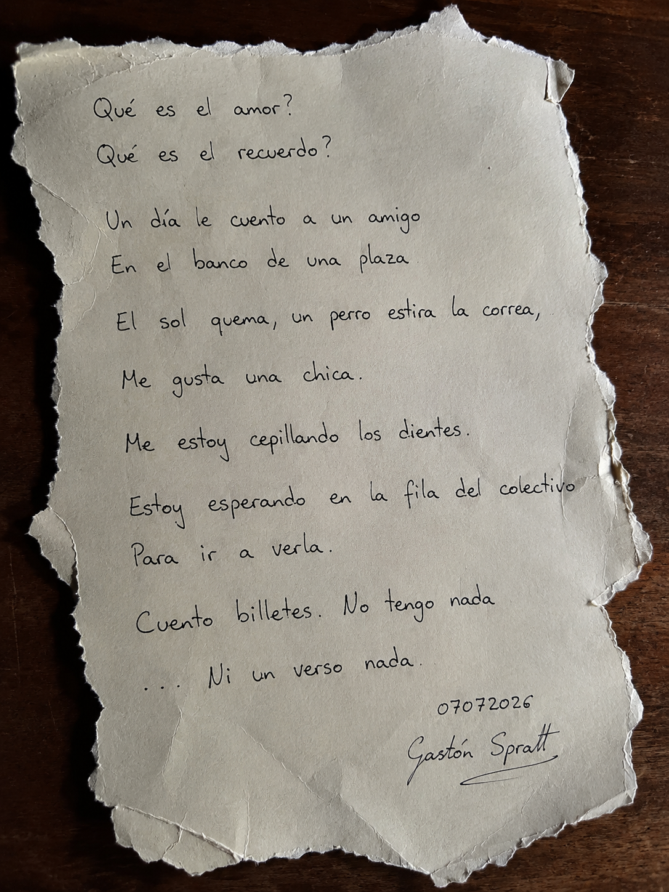
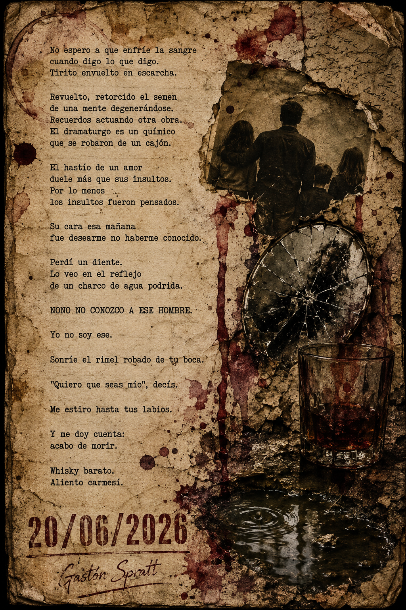
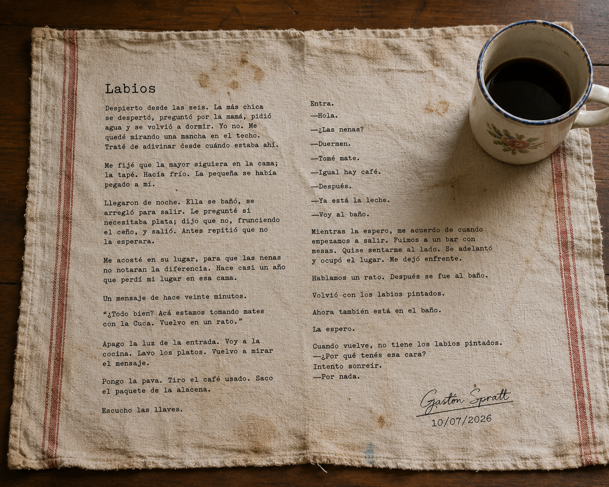
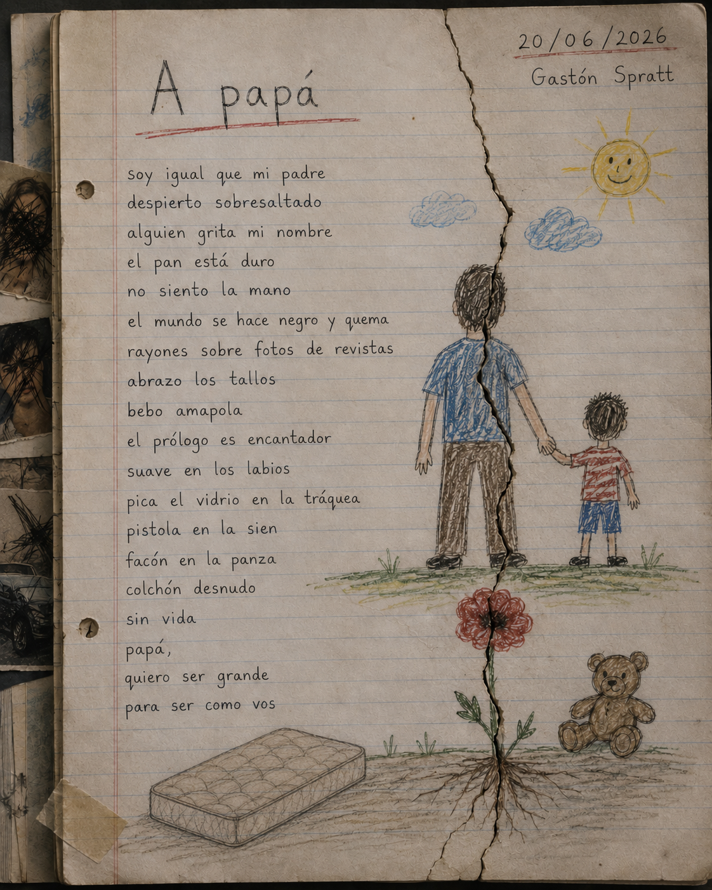

PIEZA_0001
POEMA¿QUÉ ES EL AMOR?
Poema visual perteneciente a la colección Alucinaciones. Una reflexión íntima sobre la memoria, el afecto y los pequeños gestos cotidianos.
Abrir pieza →CONSULTANDO REGISTRO...
COLECCIÓN ALUCINACIONES
NIVEL_5
PIEZAS LITERARIAS
ACCESO CONCEDIDO
FRAGMENTO CERO · NIVEL_5
// REGISTRO_0005
Alucinaciones reúne poemas, cuentos y fragmentos nacidos fuera de los proyectos narrativos principales. Cada pieza constituye una obra independiente y conserva el momento creativo en el que fue escrita.
Algunas piezas existen como texto, otras como composiciones visuales donde la imagen forma parte inseparable de la obra.

PIEZA_0001
POEMAPoema visual perteneciente a la colección Alucinaciones. Una reflexión íntima sobre la memoria, el afecto y los pequeños gestos cotidianos.
Abrir pieza →
PIEZA_0002
POEMAPoema construido desde la culpa, la memoria y la transformación personal. Una pieza escrita durante un período de profunda crisis emocional.
Abrir pieza →
PIEZA_0003
CUENTOCuento breve sobre la ausencia, la rutina y aquello que permanece sin decirse. La imagen forma parte de la obra y acompaña su lectura.
Abrir pieza →
PIEZA_0004
POEMAPoema dedicado a la memoria familiar. Una pieza construida desde el recuerdo, la ausencia y el paso del tiempo.
Abrir pieza →// REGISTRO DE COLECCIÓN
Cada pieza de esta colección representa un momento particular del proceso creativo. Algunas nacen como poemas, otras como relatos breves y otras encuentran su forma definitiva al combinar escritura e imagen.
Alucinaciones conserva fragmentos de memoria, experiencias personales y exploraciones literarias que permanecen independientes de los universos narrativos principales.
El archivo continúa abierto. Nuevas piezas podrán incorporarse cuando encuentren su forma definitiva.
// FIN DEL REGISTRO
La colección permanece abierta.
Cada nueva pieza amplía el archivo y conserva una huella del momento en que fue creada.
La memoria escribe fragmentos. El tiempo decide qué permanece.